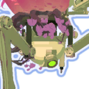
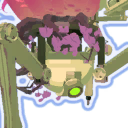
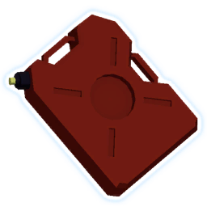
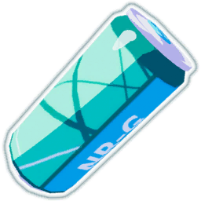
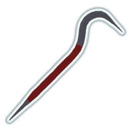

DAMAGE PACKAGES
A Risk of Rain 2 Guide
Previously, discussion of builds in ROR2 was rather limited due to players having limited input on what items they got, but with the introduction of the Command artifact, many players are finding themselves asking a simple question: "How do I build damage?"
The concept of damage packages is that they combine items that synergize underneath into one convenient, uh, package, so that instead of having each build having to list all the relevant damage items, they can just refer to the relevant package(s). These are, as you may expect, based on my experience and opinions. I consider Equipment to be part of your "build", rather than a fragment of it, so I won't be covering it in this guide.
CRIT PACKAGE


 

Critical attacks deal double damage, but damage-over-time effects (fire, bleed, poison) cannot crit. This package should be prioritized on characters with slow, heavy hits and is recommended for all survivors excluding Acrid.

|
Lens-Maker's Glasses | 9 | Each pair of glasses adds 10% crit chance. If you don't wish to employ the other items in this package, stop at 10 glasses instead, as having a crit chance over 100% does nothing. |

|
Predatory Instincts | 1+ | Instincts adds 5% crit chance ONCE and grants temporary attack speed after a crit. This bonus is much higher than Soldier's Syringe, but is also conditional. This part is optional, but recommended. |

|
Harvester's Scythe | 1+ | Scythe adds 5% crit chance ONCE and heals you every time you crit. Just one scythe is as effective as 8 leeching seeds and each additional scythe is worth 4. Any character using this package should use AT LEAST one scythe. |
ON-HIT PACKAGE
The on-hit package is the package of randomness, and the options for randomness are to either improve your chances or take more chances. This package is recommended for characters who can attack rapidly, such as Commando, MUL-T, Engineer, and REX, but since on-hit effects generally scale on damage dealt, this package works on anyone.

|
Soldier's Syringe | 1+ | Higher attack speed means more chances to activate an on-hit item. If you're using this package in combination with the crit package, Predatory Instincts grants more overall attack speed, but Soldier's Syringe is always at full effect. Once you have enough defense, healing, and mobility, extra white items should become Syringes. |
|
|
Predatory Instincts | ||

|
Tri-Tip Dagger | 1 | The damage of Tri-Tip is based on your survivor's base damage, but bleed effects can stack, which means more stacks adds more damage. With an on-hit package, however, adding more attack speed means more procs of other items. Just grab 1 for a bit of extra damage. |

|
Sticky Bomb | 1 | 5% chance to place a time-delayed bomb on-hit. Most enemies will die before the damage does anything, and the damage doesn't scale on stacks. Grab 1 for extra damage on high-health targets. |

|
AtG Missile Mk. 1 | 1+ | The ATG is primary damage of the on-hit package. The 10% proc chance never goes up, but each stack is worth 300% damage, and the rockets themselves have a full proc coefficient, meaning they'll regularly proc your other items. Once you have the other items in the package, add more ATGs to increase damage. |

|
Berzerker's Pauldron | 1 | If you kill 3 enemies in 1 second, this item will give you 100% extra attack speed and 50% move speed. Grabbing one provides an occasional damage boost, but stacking pauldrons only extends the duration of the effect. |

|
Kjaro's Band | 1 | The bands share a proc check, meaning they will always be activated at the same time. As with ATG, adding more bands increases the damage, but only by 250% and 125% respectively, and neither band can proc other items. Get a matching set and no more. |

|
Runald's Band | 1 | |
| Leeching Seed | 0 | I mention this item only to warn you not to get it. Despite the description, Leeching Seed only gives health on hit equal to your proc coefficient. If your on-hit build needs healing, use Fresh Meat or build into the Crit package. | |

|
Ukelele | 1-3 | 25% chain lightning chance. The damage is rather negligible at 80%, and additional stacks only increase the range and targets hit, but each hit can proc another item, so getting a few will allow you to clear trash enemies while focusing on the threats. |

|
Will-o'-the-wisp | 1+ | What if killing things caused things to die? Well, look no further; will-o-wisp causes enemies to explode on death and the explosion can proc other items. Stacking these increases range and damage, and though the damage increase isn't as good as ATG, will-o-wisp is a competitive option because it can cause death chains that can kill big targets for you. |
| 57 Leaf Clover | 1+ | While attack speed covers taking more chances, Clover instead improves your chances. Each stack of Clover skews random items in your favor and most runs won't be able to hit the point of diminishing returns (about 20). | |
| Brilliant Behemoth | 1 | Behemoth causes all of your attacks to explode and also deal 60% extra damage. This damage bonus is extended to your proc effects. Additional Behemoths add only to the range of the effect, which cannot proc other items. | |
| Ceremonial Dagger | 1+ | In a dark laboratory somewhere, a mad scientist had the idea of combining Will-o-wisp's on-hit chaining effect with ATG's mobility, and Ceremonial Dagger was born. Additional stacks does not increase the number of daggers, but it does increase the damage. |
DEATH MARK PACKAGE
Where on-hit would blow up their enemies in magnificent fashion, the Death Mark strangles all it touches. This package is recommended for any character who can reliably inflict status ailments, notably Artificer, REX, and Acrid, though with the assistance of items, any survivor can get this package working.

|
Death Mark | 1+ | When an enemy receives 4 other, unique debuffs, Death Mark causes them to take 50% extra damage per stack. Because Death Mark modifies damage taken, it’s one of the few things that increases the damage dealt by poisons, burns, and bleeds, as well as increasing the healing of REX’s Inject, so not only is it a very powerful effect on its own, it naturally synergizes with the survivors who want to run it. |
|
|
Tri-Tip Dagger | 3-5, 7-17 | For characters with high proc chance, such as Artificer and Acrid, 3 daggers are enough to bleed high-priority targets, but it's recommended that you eventually reach 7 daggers for 100% chance to proc on each hit. For characters with low proc chance, such as MUL-T and REX, this increases to 5 and 17 stacks respectively. |
|  | Gasoline | 3-5 | Gasoline is an on-death effect that causes nearby enemies to burn. With just a few stacks, you can easily get your main targets debuffed by killing trash enemies around them, though this is less reliable. |
| Chronobauble | 1 | How far the meek have risen. Behold the mighty chronobauble, the bearer of a guaranteed debuff. Get one and only one. | |
|
|
Runald's Band | 1 | The white band’s debuff can stack with Chronobauble, and while the 8% proc chance is inhibitive, it’s reliable enough to get Death Mark activated on high-health targets. This is the same debuff applied by the Glacial and Celestine affix, so this band becomes redundant if you can find either of those. Red band is optional for this build as it applies no debuffs, but does have high damage output. |

|
Shattering Justice | 1 | If you can get your hands on this item, it can often be your final piece to guarantee Death Mark. It also happens that removing the enemy's armor is very helpful. This is your preferred red item because it's another guaranteed proc. |
| Wake of Vultures | 1? | Wake can temporarily turn you into an elite. If you become a Fire, Glacial, Celestine, or Malachite elite, you have another guaranteed debuff for the duration. If you can manage without this, though, I would recommend skipping Vultures. | |
| 57 Leaf Clover | 1+ | Improving your odds to proc a debuff is always helpful, but the primary benefit of 57 Leaf Clover is actually to improve the chances that an elite with drop their affix. If you take an affix as your equipment, you can permanently have a Fire, Malachite, Celestine, or Glacial debuff on all of your attacks. |
ROCKET PACKAGE
Loader's rocket punch and MUL-T's shopping cart both gain damage from move speed, so obviously, we want to know what items will help here. If you want to run this package on MUL-T, I recommend that you combine it with Power-Saw as the saw blade can remain out and active during Transport Mode.

|
Paul's Goat Hoof | 1+ | This gives you speed. Goat Hoofs should be your main source of movement speed. |
|  | Energy Drink | 1 | Energy drink gives +30% move speed while sprinting on the first stack, and both Loader and MUL-T can sprint during their respective attacks. However, each goat hoof is worth 20.7% extra move speed while sprinting, but subsequent Energy Drinks are worth only 20.01%, so go for Goat Hoofs. |
|  | Crowbar | 1 | Crowbar adds 150% damage (or 10 Focus Crystals) on the first hit, and each subsequent stack adds 50% (about 3.2 Focus Crystals). If you can one-shot everything you’re fighting, then stacking crowbars is fine, but the moment you need to hit something a second time, you suddenly don’t have most of your damage. Since the two items add to the same multiplier and come from the same item pool (white), I recommend you stack Focus Crystals for more consistent damage. |
| Focus Crystal | 1+ | Focus Crystal adds 15% damage when you’re close to the thing you’re hitting. Turns out, when your method of attack is just shooting yourself at the enemy, you tend to be pretty close when the damage happens. | |

|
Red Whip | 0 | Of the conditional items that give movespeed, Red Whip is the easiest to activate, but it's generally not worth the effort. You're better off investing in the on-hit package. |
|
|
Berzerker's Pauldron | 3 | The 100% move speed boost from Pauldron is great, but the 6s duration is not. That said, if you're really intent on getting that speed and you have some room for greens, 3 would give you a 14 second window that refreshes every time you get 3 kills in under a second, which is alright. |
| Wax Quail | 1+ | Quails are a way of adding a huge burst of speed with a short hop. Loader can usually still go faster by grappling, but Quail hop is a lot easier to execute. | |
| Hardlight Afterburner | 1 | While not technically adding damage, hardlight adds extra uses and reduces the cooldown of these two abilities, which increases damage uptime enough to warrant mention. |
BUNGUS PACKAGE
This package is pretty much exclusive to the Engineer and his static turrets, but if you can find a way to heal yourself rapidly for a lot of health, you may be able to adapt it to something else. This package should be combined with others.
| Bustling Fungus | 4-44 | Bustling Fungus is a %max health heal and only needs 4 stacks to trigger the carrier or this build, but upon reaching 44 stacks, the healing reaches 103% of your max health per second. Going over can be useful with Aegis, but is not recommended. | |
| N'kuhana's Opinion | 1+ | The simple version of this item is when you heal 10% of your max health, you send out a missile to hit something nearby. More stacks means more damage, but more healing and more health is also more damage. | |
| Infusion | 1+ | Each completed infusion adds 100 health or 25 damage. I wouldn't build this FOR the damage, but it's survivability that does add damage. | |
| Rejuvenation Rack | 1 | Rack increases your healing, meaning you stack Opinion faster. The first doubles all healing you receive, and each additional Rack increases that multiplier by 1 (giving 3x, 4x, 5x, etc). For builds using Bungus, one is more than enough, but other builds may want to add more in order to be able to hit the Opinion threshold more frequently | |
| Titanic Knurl | 0+ | Adds 40 health or 10 damage. If no one else wants the yellow item, take it, but it won't blow your mind. | |
| Shaped Glass | 0+ | Shaped Glass halves your health and doubles your damage. This results in a theoretical neutral exchange, or a marginal change due to rounding. However, shaped Glass will still double your other damage packages, so it's still viable. |
OTHER
This isn't a package, but a way for me to talk about the remaining items or items that should be addressed separately.
| Armor-Piercing Round | 0+ | AP Rounds is one of three items that share a rarity and damage multiplier. AP rounds itself gives +20% damage per stack against teleporter bosses and the Alloy Worship Unit. Picking up a few can drastically improve your ability to handle bosses early on and increase your chances of surviving a run. | |
| Crowbar | 1 | Crowbar is the second of three items that share a rarity and damage multiplier. Crowbar gives +150% damage, and +50% damage per stack, against targets above 90% health. Its primary use is for clearing low-health targets (such as wisps), especially when combined with items like Will-o-Wisp. The stacking damage looks very tempting, but as soon as the enemy drops below 90% health, that damage vanishes. Almost every build should pick up one of these, but it’s hard to recommend more than that. | |
| Focus Crystal | * | Focus Crystal is the third of three items that share a rarity and damage multiplier. Focus Crystal has the lowest damage bonus of the three at +15% per stack, but the condition is the easiest to meet: be close to the enemy. Most characters should just ignore these in favor of a combination of AP Rounds and Crowbars, but melee characters such as saw MUL-T, Merc, and Loader should treat Focus Crystals as a one-item damage package to be integrated alongside others. | |

|
Bundle of Fireworks | * | Fireworks is a nonsense item, but one that can wipe entire maps. Think of them like cluster ATGs that fire when you activate an item. Stacking these is nonsense, but the kind of nonsense everyone should try once. |
| Warbanner | 0 | If Warbanner's condition were easier to meet, I would recommend everyone pick up a few. However, its effect is almost never where it needs to be, so I can only suggest to avoid it. | |

|
Old Guillotine | 7-8 | Guillotine reduces the effective HP of all elites, and executes them when they get under a certain % of their max HP. At around seven guillotines, this is approximately half of their health, and further stacks add less effective damage than investing in another ATG or Death Mark. |
| Razorwire | * | Razorwire is a Ukulele that fires when you take damage. This can be exploited with Void Fields, Hellfire Tincture, or just playing REX normally. As with Uke, grabbing a few to increase range and target numbers will help you out, but outside of the aforementioned cases, you're probably better off grabbing a different green. | |

|
Squid Polyp | 0 | Squid Polyps shouldn't be a green item. If anything, Firewords should be given a 1.0 proc coefficient and swap rarities with this item because they do the same thing, only Squid Polyp does it worse. |

|
War Horn | * | Warhorn is actually a good boost and many builds utilizing Gesture of the Drowned can get a lot of mileage out of it, but if you don't have a way to reliably trigger it, warhorn is rather useless. How much you should stack is build-dependent. |
| Frost Relic | 0 | Creates a damaging aura around you when you kill an enemy. The damage is alright, but the range is pretty bad, even for characters like Merc. Also it can kill you if you wander too close to explosives. | |
| Resonance Disc | 1 | Resonance disc is a "win more" item, in that if you've got the build to keep it active, it'll accelerate that process. When moving it has a good proc coefficient, thus synergizes well with the on-hit package, and the explosion does massive damage, which combines well with the crit package. | |
| Sentient Meat Hook | 1-2 | Sentient Meat Hook is kind of a cross between Ukulele and Razorwire. It's weaker than many red items, but it is at least stronger than many green items. Increased stacks increases proc chance, but at an odd pattern, consult the wiki for details. | |
| Unstable Tesla Coil | 1 | Frost Relic but better. When Tesla Coil activates, it's like having a Ukulele firing around you constantly with a slightly higher proc chance. Additional stacks don't really help much. | |
| Little Disciple | 1 | Unstable Tesla Coil but better. Little Disciple activates once two conditions have been met: you are sprinting, and there are enemies nearby. It will then send out seeking missiles, number of which is determined by your stack count. Also the missiles have a full 1.0 proc coefficient, so grab a few, grab a Rose Buckler, and have some fun. NOTE: this only requires you to be sprinting, not moving. If you sprint into a wall, you can have both Little Disciple and Bustling Fungus active at the same time. | |
| Shaped Glass | * | Shaped Glass is the king of Risk of Rain 2. Each stack doubles your damage and halves your health, and they stack multiplicatively, meaning 2 gives 4x damage, 3 gives 8x, 4 gives 16x, etc. When playing casually, these are never needed, but if you're actually trying, you should grab as many as you can handle. |